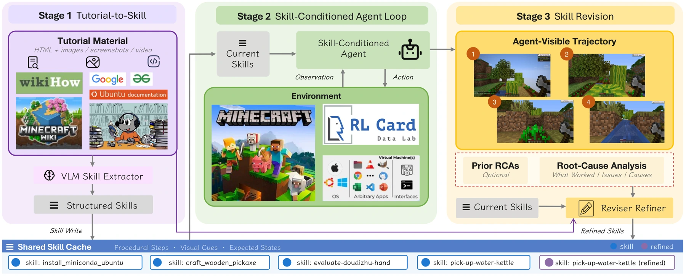
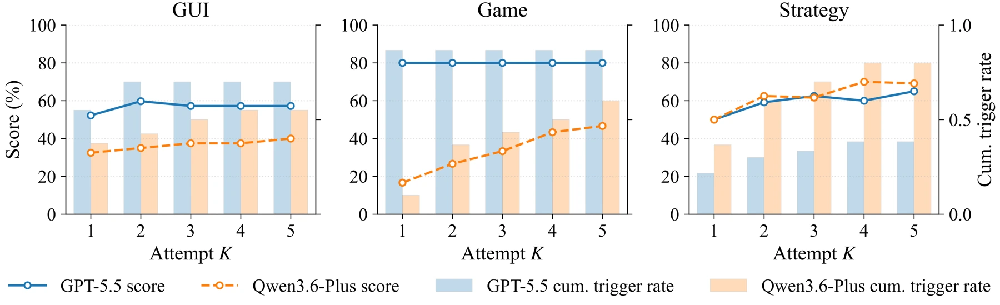

Web tutorials contain useful procedural knowledge, but they often assume human judgment and mix text with images. Giving an agent the raw material does not ensure it can act on it. MMG2Skill frames this gap as guide-to-skill learning.
网络教程包含丰富的操作知识，但通常依赖人的判断，并混合文字与图像。直接提供这些材料，并不意味着智能体就能据此行动。MMG2Skill 将这一差距定义为从指南到技能的学习问题。
The useful unit of learning in this work is an editable procedure: something the agent can try, diagnose and revise after seeing what actually happened.
这项工作的学习单元是一套可编辑流程：智能体可以尝试它，分析实际发生的情况，再据此修订。
Turning guides into editable skills把指南变成可编辑技能
The framework compiles guides into editable skills that condition a fixed vision-language model. After execution, trajectory-level analysis identifies causes of failure and revises the skills. The model’s weights remain fixed, and benchmark scores are not used as revision feedback. MMG2Skill-Bench evaluates the process across GUI tasks, gameplay, and strategic card play.
框架先将指南编译成可编辑技能，用于指导权重固定的视觉语言模型。执行之后，通过轨迹分析寻找失败原因并修订技能；修订过程不使用基准分数作为反馈。MMG2Skill-Bench 在图形界面操作、游戏和策略卡牌任务中评估这一过程。
The intermediate skill is important because it makes a human guide actionable. A tutorial may describe a goal informally and leave prerequisites or recovery steps implicit. Skill construction organizes this material into a procedure that the agent can use. The revision stage then asks what actually went wrong in an execution trajectory and edits the procedure accordingly. This external memory can change while the model that interprets it remains exactly the same.
中间技能表示使人类指南真正可执行。教程往往用非正式语言描述目标，并省略前提条件或失败恢复步骤；技能构建将这些内容组织成可供智能体使用的流程。修订阶段再依据实际执行轨迹分析问题，并修改流程。外部记忆因此可以变化，而解释它的模型保持不变。
{kind=link}

Following a skill from execution to revision从执行到修订检验技能
The study uses the same backbone for construction, execution, analysis and refinement, avoiding a hidden advantage from a stronger external teacher. Across GUI, game and strategy tasks, it compares no skills, raw guides and the complete loop. Main results allow five attempts and use the analyzer’s early-stop decision. Component ablations separate the value of structured extraction from subsequent revision; private-information tasks are analyzed separately.
研究在技能构建、执行、分析和改写中使用同一骨干模型，避免更强外部教师带来的隐性优势。GUI、游戏与策略任务分别比较无技能、原始指南和完整闭环。主要结果允许五次尝试，并由分析器决定提前停止；组件消融区分结构化提取与后续修订的贡献，涉及私有信息的任务则单独分析。
What improves when skills can change可修订技能带来了什么
Across six model backbones, the reported macro-average improvements range from 12.8 to 25.3 percentage points. Raw guides can reduce performance; structured construction and subsequent revision both matter. Early stopping can also reduce wasted attempts when success signals are calibrated. These results distinguish improvements to an agent’s skill library from changes to its underlying model.
在六种模型骨干上，宏平均提升为 12.8 至 25.3 个百分点。原始指南甚至可能降低表现，而结构化技能构建和后续修订都不可缺少。当成功信号经过校准时，提前停止还能减少无效尝试。这些结果体现的是技能库的改进，而非底层模型权重的改变。
{kind=link}

Self-improvement without updating weights不更新权重的自我改进
The improvement lives in the agent’s editable skill library. Model weights stay fixed, making this an interpretable form of self-improvement: one can inspect what the agent learned and how a failed attempt changed its procedure. A remaining deployment issue is calibration. An analyzer that declares success too early can preserve an incorrect skill, especially when the environment hides decisive information.
改进发生在可编辑的技能库中，模型权重保持不变，因此可以检查智能体学到了什么，以及失败如何改变操作过程。这是一种可追踪的自我改进形式。部署时仍需关注分析器的校准：若过早判断成功，错误技能可能被保留下来，尤其是在环境隐藏关键信息时。
Paper & authors论文与作者
MMG2Skill: Can Agents Distill In-the-Wild Guides into Self-Evolving Skills? ↗
Cite this work
@misc{che2026mmg2skillagentsdistillinthewild,
title = {MMG2Skill: Can Agents Distill In-the-Wild Guides into Self-Evolving Skills?},
author = {Xinyu Che
and Junqi Xiong
and Yunfei Ge
and Xinping Lei
and Shihao Li
and Hang Yan
and Han Li
and Yuanxing Zhang
and Zhiqi Bai
and Jinhua Hao
and Ming Sun
and Han Li
and Jiaheng Liu},
year = {2026},
eprint = {2606.01993},
archivePrefix = {arXiv},
primaryClass = {cs.CL},
url = {https://arxiv.org/abs/2606.01993}
}